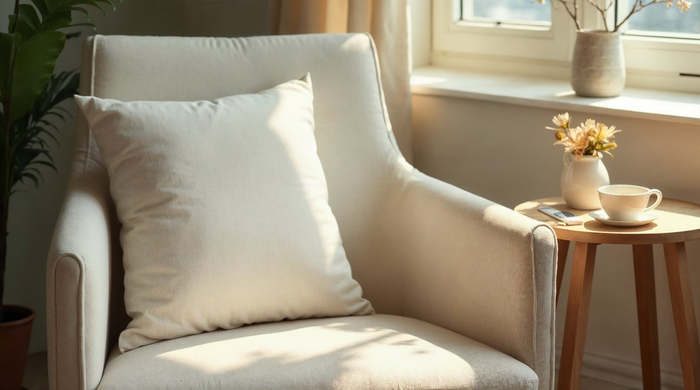

이종호 한의사 감수좋은꿈참사랑한의원 대표원장 (한의사 면허번호 19769)발행 2026-11-26 · 수정 2026-11-26
이 글의 차례
빙판길에서 미끄러지며 옆구리를 계단 모서리에 부딪혔습니다. 그날은 멍이 들고 욱신거리는 정도였는데, 다음 날 아침 기침 한 번에 숨이 턱 막힐 만큼 아픕니다. 누웠다 일어날 때, 돌아누울 때, 웃을 때마다 같은 자리가 찌르듯 아파 하루 종일 몸을 조심조심 움직이게 됩니다.
갈비뼈를 다친 분들이 진료실에서 가장 많이 하시는 말씀은 "숨 쉬는 것도 아파요"입니다. 팔이나 다리는 쓰지 않고 쉬게 할 수 있지만, 갈비뼈는 숨을 쉬는 한 쉬지 못하고 계속 움직입니다. 그래서 작은 부상인데도 일상이 통째로 흔들린다고 느끼십니다.
정형외과에서 사진을 찍어 보니 뼈에는 이상이 없고 타박이라는 말을 들으신 분도 있고, 금이 갔다는 말을 들으신 분도 있습니다. 어느 쪽이든 회복에는 몇 주의 시간이 걸리고, 그동안 어떻게 숨 쉬고 자고 움직이느냐가 회복의 흐름을 좌우합니다.
갈비뼈 부상은 모양이 겉으로 잘 드러나지 않아서 주변 사람들이 아픔을 짐작하기 어렵습니다. 그래서 괜찮은 척 일하다가 회복이 더뎌지는 분도 많습니다. 아픔을 인정하고 몸의 속도에 맞춰 지내는 것이 오히려 빨리 일상으로 돌아가는 길입니다.
이 글에서는 갈비뼈 타박과 금 간 상태가 어떻게 다른지, 왜 이렇게 오래 아픈지, 회복기 생활 요령과 한의원에서 함께 살필 수 있는 것을 차례로 정리했습니다.
갈비뼈 타박과 금 간 것은 어떻게 다른가요
갈비뼈 타박은 뼈는 멀쩡하지만 그 위를 덮은 근육과 막, 뼈를 감싼 얇은 막이 충격을 받아 멍들고 부은 상태입니다. 금이 간 것은 뼈에 가는 틈이 생긴 상태로, 뼈가 어긋나지 않고 제자리에 있는 경우가 많습니다.
둘 다 숨 쉬고 기침하고 몸을 돌릴 때 아프다는 점은 비슷합니다. 아픈 자리를 손가락 하나로 짚었을 때 뼈 위 한 점이 유난히 아프거나, 양손으로 가슴을 앞뒤에서 살짝 눌렀을 때 다친 자리가 울리듯 아프다면 금이 갔을 가능성을 생각합니다.
금이 간 것은 단순 사진에서 잘 보이지 않을 때도 있어서, 처음에는 타박이라고 들었다가 시간이 지나 다시 찍은 사진에서 확인되기도 합니다. 어느 쪽이든 생활 요령은 크게 다르지 않지만, 회복에 걸리는 시간은 금이 간 쪽이 조금 더 깁니다.
왜 갈비뼈 통증은 이렇게 오래갈까요
갈비뼈는 숨을 쉴 때마다 위아래, 앞뒤로 조금씩 벌어졌다 오므라듭니다. 하루에 수만 번 숨을 쉬니, 다친 자리도 하루에 수만 번 움직이는 셈입니다. 쉬게 해 줄 수 없는 자리라서 회복이 더디게 느껴집니다.
- 숨을 쉬고 말을 하는 것만으로도 다친 자리가 계속 움직이는 경우
- 기침, 재채기, 웃음처럼 갑자기 가슴이 크게 움직이는 일이 잦은 경우
- 아픔 때문에 숨을 얕게 쉬면서 등과 어깨 근육이 굳는 경우
- 다친 쪽을 감싸느라 몸이 한쪽으로 기울고 반대쪽까지 뻐근해지는 경우
- 잠자리에서 돌아눕지 못해 잠이 얕아지고 회복이 더딘 경우
보통 타박은 2~3주, 금이 간 경우는 4~6주 정도에 걸쳐 통증이 서서히 줄어드는 흐름을 보입니다. 다만 사람마다 차이가 있고, 그 사이 기침이 잦거나 무리한 일을 하면 더 길어지기도 합니다.
늑간신경통, 늑연골염과는 어떻게 다른가요
늑간신경통은 갈비뼈 사이를 지나는 신경이 예민해져 갈비뼈를 따라 띠처럼 찌릿하고 화끈한 통증이 생기는 경우입니다. 다친 일 없이 생기는 경우가 많고, 아픔이 한 점이 아니라 선을 따라 퍼지는 것이 특징입니다.
늑연골염은 가슴뼈와 갈비뼈를 잇는 연골에 염증이 생겨 가슴 앞쪽이 아픈 경우입니다. 이것도 부딪힌 일 없이 생기는 경우가 많습니다. 갈비뼈 타박이나 금은 분명히 부딪히거나 넘어진 일이 있었고, 그 자리를 중심으로 아프다는 점이 다릅니다.
다만 다친 뒤 숨을 얕게 쉬고 몸을 웅크리고 지내다 보면, 다친 자리 주변 신경과 근육까지 예민해져 통증이 넓게 퍼지기도 합니다. 그래서 회복기에는 처음 다친 자리와 나중에 아파진 자리를 나눠서 살핍니다.
숨쉬기를 너무 아끼지 마세요
아프다 보니 숨을 얕게만 쉬는 분이 많습니다. 하지만 숨을 계속 얕게 쉬면 폐의 아래쪽까지 공기가 잘 들어가지 않고, 가래가 고이기 쉬워집니다. 그러면 기침이 늘고, 기침이 늘면 갈비뼈가 더 아픈 흐름이 생깁니다.
한 시간에 한 번 정도, 다친 자리에 베개나 쿠션을 가볍게 대어 감싸 안고 천천히 깊게 숨을 들이쉬었다 내쉬어 보세요. 다섯 번 정도면 충분합니다. 기침이나 재채기가 나올 것 같을 때도 쿠션을 안고 하면 울림이 훨씬 덜합니다.
예전에는 가슴을 붕대로 단단히 감는 경우가 많았지만, 요즘은 숨쉬기를 방해할 수 있어 잘 권하지 않는 편입니다. 보호대를 쓰고 계신다면 정형외과에서 받은 안내를 따르시면 됩니다.

나이와 몸 상태에 따라 다른 회복
연세가 드신 분이나 뼈가 약하다는 말을 들으신 분은 가볍게 부딪혀도 갈비뼈에 금이 가기 쉽고, 회복에도 시간이 조금 더 걸리는 경우가 많습니다. 기침 한 번, 세게 끌어안기 같은 작은 힘으로도 금이 가는 경우가 있어서, 다친 기억이 뚜렷하지 않아도 갈비뼈 한 점이 계속 아프다면 이야기해 주세요.
평소 기침을 오래 하는 분, 담배를 피우시는 분은 회복기에 기침이 잦아 통증이 오래 이어지기 쉽습니다. 이 시기만큼은 담배를 줄이고, 방 안 공기가 너무 건조하지 않게 해 기침을 덜 유발하는 환경을 만들어 보세요.
운동을 하다 다치신 젊은 분은 회복이 비교적 빠른 편이지만, 그만큼 일찍 운동으로 돌아가려다 다시 아파지는 경우가 많습니다. 통증이 줄었다고 바로 원래 강도로 돌아가기보다, 한 단계씩 올려 가는 편이 결국 더 빠릅니다.
스스로 살펴볼 수 있는 몇 가지
회복이 잘 되고 있는지 확인할 때는 아래 질문에 답해 보세요. 일주일 간격으로 비교하면 변화가 보입니다.
- 깊게 숨을 들이쉴 때 아픔이 지난주보다 줄었나요?
- 돌아눕거나 누웠다 일어날 때 걸리는 시간이 짧아졌나요?
- 기침이나 재채기를 할 때의 울림이 덜해졌나요?
- 처음 다친 자리 말고 등이나 어깨, 반대쪽 옆구리가 새로 아파졌나요?
마지막 질문처럼 다른 자리가 새로 아파졌다면, 다친 쪽을 감싸느라 몸의 균형이 무너진 경우가 많습니다. 이 부분은 회복기에 함께 살펴보면 도움이 되는 경우가 많습니다.
거울 앞에 서서 양쪽 어깨 높이를 비교해 보시는 것도 좋습니다. 다친 쪽 어깨가 내려가 있거나 몸이 그쪽으로 기울어 있다면, 아픔을 피하느라 생긴 자세가 굳어 가고 있다는 뜻일 수 있습니다. 하루 몇 번 어깨를 가볍게 으쓱했다 내리며 균형을 떠올려 보세요.
먼저 이렇게 여쭙니다
처음 오시면 저는 대략 이런 순서로 여쭙니다. 미리 떠올려 오시면 이야기가 훨씬 수월해집니다.
- 언제, 어떤 상황에서 다치셨나요? 넘어졌는지, 부딪혔는지, 무엇에 부딪혔는지요.
- 정형외과에서 사진을 찍으셨고, 어떤 설명을 들으셨나요?
- 숨 쉴 때, 기침할 때, 돌아누울 때 중 언제 가장 아프신가요?
- 다친 뒤 숨이 차거나 기침에 가래가 늘었나요?
- 지금 드시는 진통제나 다른 약, 특히 피를 묽게 하는 약이 있나요?
- 잠은 어떻게 주무시고, 몇 번이나 깨시나요?
교통사고로 다치신 경우라면 사고 날짜와 처음 진료받은 병원도 함께 여쭙니다. 자동차보험으로 진료를 받으실 수 있는지는 상황에 따라 다르니, 접수 전 전화로 확인해 주세요.
일상에서 먼저 해 볼 수 있는 것
갈비뼈 회복기의 생활은 '아픈 움직임은 줄이되, 숨과 몸은 멈추지 않는 것'이 기본입니다. 작은 요령이 하루의 아픔을 꽤 줄여 주고, 몸을 쓰는 자신감도 조금씩 되찾게 해 줍니다.
- 누웠다 일어날 때는 옆으로 돌아누운 뒤 팔로 바닥을 밀며 일어나기
- 기침이나 재채기를 할 때는 쿠션을 안고 하기
- 한 시간에 한 번, 쿠션을 감싸 안고 천천히 깊게 숨 다섯 번
- 무거운 물건 들기, 팔을 크게 휘두르는 동작은 당분간 줄이기
- 평지 걷기로 몸을 조금씩 움직여 등과 어깨가 굳지 않게 하기
- 다친 직후 며칠은 짧게 차갑게, 그 뒤에는 따뜻하게
잠자리는 많은 분들이 가장 힘들어하시는 부분입니다. 다친 쪽이 위로 오게 옆으로 눕고, 등 뒤에 베개를 받쳐 몸이 뒤로 넘어가지 않게 하면 한결 편합니다. 바로 누우실 때는 등 아래에 쿠션을 넣어 상체를 조금 세우면 숨쉬기가 수월하다고 하시는 분이 많습니다.
변비가 생기면 힘을 줄 때 갈비뼈가 크게 아플 수 있습니다. 진통제를 드시는 동안에는 특히 물과 채소를 넉넉히 드시고, 몸을 조금씩 움직여 장도 함께 움직이게 해 주세요.
운동은 통증이 충분히 줄어들 때까지 골프나 테니스처럼 몸을 비트는 운동, 팔굽혀 펴기처럼 가슴에 힘이 실리는 운동은 미뤄 두세요. 다시 시작할 때는 가볍게, 다음 날 통증이 늘지 않는 범위에서 늘려 가시면 됩니다.
한의원에서 함께 살필 수 있는 경우
- 뼈 검사에서 큰 문제는 없다고 들었지만 숨 쉬고 돌아누울 때 계속 아픈 경우
- 금이 간 뒤 회복 중인데 등과 어깨, 반대쪽 옆구리까지 뻐근해진 경우
- 아파서 숨을 얕게 쉬다 보니 가슴이 답답하고 잠이 얕아진 경우
- 다친 지 몇 주가 지나 뼈는 붙어 가는데 주변 근육 통증이 오래 남은 경우
- 교통사고 뒤 갈비뼈 주변과 목, 허리가 함께 불편한 경우
좋은꿈참사랑한의원에 오시면 먼저 아래 '먼저 확인이 필요한' 신호가 없는지부터 봅니다. 그다음 맥을 짚고, 숨쉬기의 깊이와 갈비뼈 주변, 등과 어깨 근육의 긴장을 조심스럽게 살핍니다. 다친 자리는 세게 누르거나 비틀지 않습니다.
진찰한 내용을 바탕으로 침, 약침, 온열 관리 가운데 지금 상태에 맞는 것을 정합니다. 다친 자리 바로 위보다는 그 주변과 등, 어깨처럼 함께 굳은 자리를 중심으로 살피는 경우가 많고, 회복 초기에는 갈비뼈에 힘이 실리는 교정 동작은 하지 않습니다.
멍과 붓기, 잠과 피로가 함께 있다면 한약 상담을 하기도 하며, 이때는 드시는 약을 모두 확인하고 신중히 정합니다. 임신 중이시거나 가능성이 있다면 먼저 알려 주시고, 산부인과와 상의하도록 안내합니다.
정형외과에서 받는 진료와 처방받은 진통제는 함께 이어 가시면 되고, 상의 없이 멈추지 마세요. 피를 묽게 하는 약을 드신다면 처음에 꼭 말씀해 주세요.
이렇게 기록해 오시면 상담이 쉬워집니다
갈비뼈 통증은 하루하루는 변화가 작아 보여도, 일주일 단위로 보면 흐름이 보입니다. 아래 내용을 간단히 적어 오세요.
- 깊게 숨 쉴 때, 기침할 때, 돌아누울 때의 통증 정도 0~10
- 진통제를 드신 시각과 횟수
- 잠든 시각과 깬 횟수, 편했던 잠자리 자세
- 새로 아파진 자리가 있다면 그 위치
- 기침, 가래, 열 같은 감기 증상이 있었던 날
진통제를 드시는 횟수가 조금씩 줄어드는 것도 회복의 좋은 신호입니다. 기록을 보며 어느 정도 속도로 일상 동작을 늘려 갈지 함께 정해 보겠습니다. 정형외과에서 받은 사진 판독지가 있다면 함께 가져와 주세요.
숨과 함께 천천히 회복합니다
갈비뼈 부상은 쉬게 할 수 없는 자리라서 회복이 더디게 느껴지지만, 대부분 몇 주에 걸쳐 조금씩 가벼워집니다. 아프다고 숨을 아끼기보다, 쿠션을 안고 천천히 깊게 숨 쉬는 연습을 이어 가는 것이 회복을 돕습니다. 조급한 마음을 내려놓고 몸이 보내는 신호에 맞춰 하루하루를 보내 보세요.
이번 주에는 한 시간에 한 번 깊은 숨 다섯 번, 그리고 옆으로 돌아누운 뒤 일어나는 요령 두 가지만 챙겨 보세요. 다음에 오시면 기록을 함께 보며 어떤 동작부터 다시 늘려 갈지 이야기 나눠 보겠습니다.
이런 증상은 먼저 확인이 필요합니다
- 숨이 점점 차오르거나 가슴 통증이 갑자기 심해지고 기침에 피가 섞여 나오는 경우
- 크게 부딪힌 뒤 배가 아프고 어지럽거나 식은땀이 나며 기운이 빠지는 경우
이런 신호가 있으면 한의원보다 가까운 병원이나 응급실을 먼저 찾으세요.
함께 읽으면 좋은 글
- 숨을 크게 쉬거나 몸을 돌릴 때 갈비뼈가 찌릿한 늑간신경통·늑연골염은 어떻게 살피나요?
- 버스나 택시를 타고 가다 급정거로 몸이 쏠린 뒤 목과 허리가 아플 때는 어떻게 하나요?
- 옆구리와 등 뒤쪽이 아플 때 근육 문제인지 어떻게 구분해서 보나요?
- 교통사고 뒤 목과 허리가 아플 때 어떤 순서로 살피고 무엇을 준비하나요?
- 골다공증으로 허리뼈 압박골절이 생긴 뒤 회복기에는 무엇을 살피나요?
여쭙는 것
- 언제, 어떤 상황에서 다치셨나요? 넘어졌는지, 부딪혔는지, 무엇에 부딪혔는지요.
- 정형외과에서 사진을 찍으셨고, 어떤 설명을 들으셨나요?
- 숨 쉴 때, 기침할 때, 돌아누울 때 중 언제 가장 아프신가요?
생활에서 해 볼 것
- 누웠다 일어날 때는 옆으로 돌아누운 뒤 팔로 바닥을 밀며 일어나기
- 기침이나 재채기를 할 때는 쿠션을 안고 하기
- 한 시간에 한 번, 쿠션을 감싸 안고 천천히 깊게 숨 다섯 번
한의원에서 함께 살필 것
- 뼈 검사에서 큰 문제는 없다고 들었지만 숨 쉬고 돌아누울 때 계속 아픈 경우
- 금이 간 뒤 회복 중인데 등과 어깨, 반대쪽 옆구리까지 뻐근해진 경우
- 아파서 숨을 얕게 쉬다 보니 가슴이 답답하고 잠이 얕아진 경우
먼저 확인이 필요한 신호
- 숨이 점점 차오르거나 가슴 통증이 갑자기 심해지고 기침에 피가 섞여 나오는 경우
- 크게 부딪힌 뒤 배가 아프고 어지럽거나 식은땀이 나며 기운이 빠지는 경우
한눈에 보는 표
| 구분 | 핵심 |
|---|---|
| 여쭙는 것 | 언제, 어떤 상황에서 다치셨나요? 넘어졌는지, 부딪혔는지, 무엇에 부딪혔는지요. 정형외과에서 사진을 찍으셨고, 어떤 설명을 들으셨나요? |
| 생활에서 해 볼 것 | 누웠다 일어날 때는 옆으로 돌아누운 뒤 팔로 바닥을 밀며 일어나기 기침이나 재채기를 할 때는 쿠션을 안고 하기 |
| 한의원에서 함께 살필 것 | 뼈 검사에서 큰 문제는 없다고 들었지만 숨 쉬고 돌아누울 때 계속 아픈 경우 금이 간 뒤 회복 중인데 등과 어깨, 반대쪽 옆구리까지 뻐근해진 경우 |
| 먼저 확인이 필요한 신호 | 숨이 점점 차오르거나 가슴 통증이 갑자기 심해지고 기침에 피가 섞여 나오는 경우 크게 부딪힌 뒤 배가 아프고 어지럽거나 식은땀이 나며 기운이 빠지는 경우 |
자주 묻는 질문
갈비뼈에 금이 갔는데 깁스 같은 것을 안 해도 되나요?
갈비뼈는 숨을 쉬며 계속 움직이는 자리라 깁스를 하지 않는 경우가 많습니다. 보호대 사용 여부는 정형외과 안내를 따르시고, 생활에서는 숨쉬기와 잠자리 요령을 함께 챙기시면 됩니다.
언제쯤 아프지 않게 되나요?
보통 타박은 2~3주, 금이 간 경우는 4~6주에 걸쳐 서서히 줄어드는 흐름을 보이지만 사람마다 다릅니다. 기침이 잦거나 무리를 하면 더 길어질 수 있어 생활 조절이 중요합니다.
아픈 자리를 주무르면 빨리 풀리나요?
다친 자리를 세게 주무르거나 누르면 오히려 아픔이 커질 수 있습니다. 다친 자리는 쉬게 하고, 함께 굳은 등과 어깨를 부드럽게 풀어 주시는 편이 좋습니다.
교통사고로 갈비뼈를 다쳤는데 한의원 진료를 받을 수 있나요?
자동차보험 진료 가능 여부는 상황에 따라 다르니 접수 전 전화로 확인해 주세요. 진료실에서는 갈비뼈와 함께 목, 허리 등 다른 불편도 함께 살핍니다.
다친 뒤 운동은 언제 다시 해도 되나요?
걷기는 통증이 허락하는 범위에서 일찍 시작하셔도 좋습니다. 몸을 비트는 운동이나 가슴에 힘이 실리는 운동은 통증이 충분히 줄어든 뒤 가볍게 다시 시작하시길 권합니다.
좋은꿈참사랑한의원은 재진 때 지난번 이야기부터 이어서 여쭙니다. 진료시간과 예약은 오시는 길에서 확인하세요.
어디서 상담받을 수 있나요?
좋은꿈참사랑한의원은 서울 동작구 만양로2길 2 신성빌딩 3층·5층(서울 동작구 상도동, 7호선 상도역 3번 출구 근처)에 있습니다. 한의사 3명(이종호 대표원장, 조영기 수석진료원장, 정원영 진료원장)이 진료합니다. 진료시간은 평일 09:30~20:00(점심 13:00~14:00), 토·일·공휴일 09:30~15:00이며, 방문 전 전화로 확인을 권합니다. 예약은 네이버 예약, 카카오톡 상담, 전화 02-815-7510로 받습니다.
이 글은 일반적인 건강 정보이며 개인의 진단이나 치료를 대신하지 않습니다. 증상이 있거나 복용 중인 약이 있다면 진료를 통해 확인하세요. 치료 효과는 개인마다 다를 수 있습니다.
작성 기준: 일반적으로 알려져 있는 건강 정보를 참고해 정리했습니다(대표원장 감수). 증상 기록은 1~2주 동안 하루 1회, 비슷한 시간에 적어 오시면 지난 상태와 비교하기 쉽습니다.